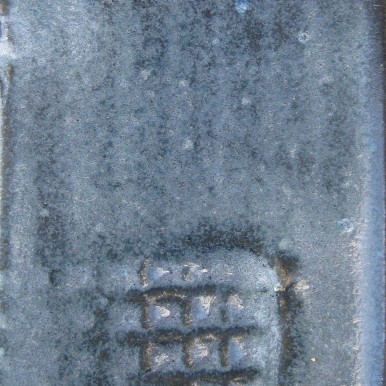
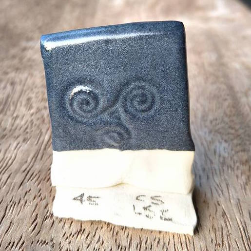
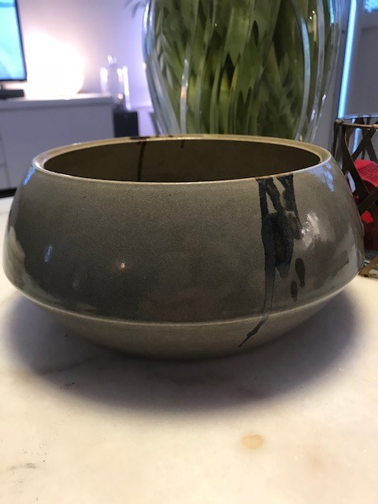

Most often Recommended: Grey Mason Stain
Dee Karabowicz:
I went through hundreds of tests last fall and finally settled on a variant of Folk Art Guild White from mastering cone 6 glazes. I only do 1% red iron oxide and use 3% of a grey Mason stain. (I should also mention I use tin instead of zircopax. It’s more expensive but I like the look better.) The glaze breaks well on edges and carving.
Dick White:
(Charcoal Satin Matte) is a dark charcoal gray, with the color coming from black Mason stain #6600. If you desire a lighter gray color, DO NOT just use less 6600 stain. Choose a different stain that is the shade of gray you want. This is a direct recommendation from Mason Colorworks. The oxides that make up black 6600 will separate out in lower concentrations and you will get varying shades of blues and greens, not gray.

Donna Kat:
Sorry if I am repeating, don’t try a black stain to make grey. Instead use a grey stain. This comes up fairly often. Do a search (top left) in the group for grey or gray.
Derek Au:
For grey it’s good to just try adding different grey mason stains to a base glaze. There’s a good article on Digitalfire about a Matte glaze base that shows it with added colorants: https://digitalfire.com/4sight/recipes/cone_6_dolomite_matte_base_glaze_121.html
Pamela Thomas:
I never got a truly reliable grey matte until I resorted to mason stains. #6500 and #6523 are my 2 go to grey stains! 6-10% gets the job done.
Stain with Rutile
Matt Katz Gasworks Earl Gray (https://glazy.org/recipes/18056) uses a combination of stain and rutile.
Grey Slip with Clear Glaze
Glen Ladegaard:
This looks indigo in the image but it’s a lovely charcoal grey. Conrad Slip with Leach Satin Clear on top. Fired on white stoneware to 1200C with 15 min hold. Recipes below.
Conrad Slip
Nepheline Syenite 15
Soda Ash 5
Whiting 5
Potash Feldspar 14
Kaolin 19
Ball Clay 19
Silica 23
- Mason Stain 6600 12
Leach Satin (Clear)
Potash Feldspar 21.7
Whiting 21.7
Silica 21.7
Kaolin 21.7
Frit 3124 13.2

Other Coloring Oxides
Dimo´s Dark Grey, c6-8

Dimo Giouvanoglou
With Iron Chromate, Rutile, Cobalt Carbonate, and Zircopax
I have tested it at 1240°, 1250° and 1260°, works fine with a similar result at all temperatures. Nice, smooth and glossy surface. If you want a slightly warmer grey, you can exclude the cobalt.
https://glazy.org/recipes/16342
Dick White:
Cone 6 electric - try adding 0.2% cobalt carb and 2.5% manganese dioxide to your favorite base.
Spot Blue - Pale Blue Grey Denim ^6 Glaze
via Ruth Sachs
Gerstley Borate 50
EPK 20
Flint 30
Zircopax 10
Cobalt Carb 1
Nickel & Cobalt
Kim Ulrick recommends Storm Grey (https://glazy.org/recipes/22302) which contains Nickel & Cobalt.
Rutile, Iron, Cobalt Carbonate
Liz Vigoda recommends variegated dove gray
https://glazy.org/recipes/18586
Grey glaze recipes
Charcoal Satin Matte
(Often recommended on Ceramics Recipes)
https://glazy.org/recipes/2570
(Found at http://www.frogpondpottery.com/tested-glazes/mid-fire-stonewareporcelain/charcoal-satin.html)
J7 GREY
https://glazy.org/recipes/6901
Pete Pinnell Strontium Matte
From Monique Duclos
Engobe with stain underneath clear glaze
Walter Ivan Heath:
I used to get a cool gray on a cone six oxidation red body by using Mason Stain 6381 Blackberry Wine in a vitreous engobe with Heath A2 Base over it
(I used gertsley borate instead of frit 3134)
https://glazy.org/recipes/8793


{kind=link}
{kind=link}
{kind=link}
{kind=link}
{kind=link}
{kind=link}
{kind=link}
{kind=link}